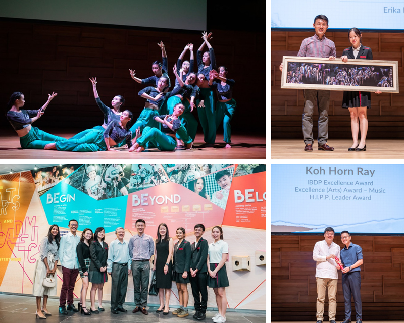

SOTA e-Awards
Prototyping with Adobe XD, and exploring front-end libraries/frameworks
Summary
An internal event that celebrates the achievements of its most recent graduating cohort, the School of the Arts (SOTA) Awards Day is a mid-year key feature of the school calendar that was held online in 2020 and 2021. While working on these, I explored various UI tools such as Adobe XD and front-end libraries.
Context
SOTA Awards is the school's annual speech day event. Besides celebrating the achievements of SOTA's students and graduating cohort, the event usually features a programme filled with performances conceptualised and performed by SOTA teachers, students and/or alumni, and is graced by a Guest-of-Honour.

Snapshots of one of the previous SOTA Awards, with SPS/MCCY Mr Baey Yam Keng (top right and bottom left) as its Guest-of-Honour
(Photo credits: www.sota.edu.sg)
(Photo credits: www.sota.edu.sg)
With restrictions placed on large-scale events in Singapore due to the COVID-19 pandemic from March 2020 onwards, SOTA Awards had to go online. Similar to the SOTA e-Open Houses, SOTA e-Awards 2020 and 2021 required a dedicated web landing page, with features that would emulate the event had it been held in-person.
The Requirements
Despite moving it online, we wanted SOTA e-Awards to retain celebrative spirit. At the same time, while spotlighting speeches from our key personnel, we also placed importance on recognising the achievements of our pinnacle awardees. We also kept in mind that our page's target audience would be student awardees and their parents, and hence also needed visibility for buttons to download our award e-booklets.
Screenshot of one of our downloadable award e-booklets
In addition, as with all our events, we needed the page to be consistent with our selected key visual and branding.
Creating Wireframes/Prototypes
With the above in mind, I created both low- and high-fidelity wireframes/prototypes for SOTA e-Awards 2020 and 2021 to convey my design intentions to key stakeholders, revising my design according to feedback received.
A pen-and-paper wireframe I made for the 2020 edition v.s. my high-fidelity wireframe for 2021's
While I am unable to share the final product due to the internal nature of this event, you may view my high-fidelity desktop and mobile wireframes for the 2021 edition here and here respectively. These were made using Adobe XD.
Front-end Libraries & Frameworks
During the development stage of both the 2020 and 2021 editions of SOTA e-Awards, I took the opportunity to familiarise myself with the following front-end frameworks and libraries:
At the same time, I leveraged on these e-events to pick up data management and presentation with JSON, bearing in mind D-R-Y principles to not duplicate code. I also learnt to use SASS, to write CSS more efficiently. Late to the game, I know, but I have not looked back since!

At the same time, I leveraged on these e-events to pick up data management and presentation with JSON, bearing in mind D-R-Y principles to not duplicate code. I also learnt to use SASS, to write CSS more efficiently. Late to the game, I know, but I have not looked back since!